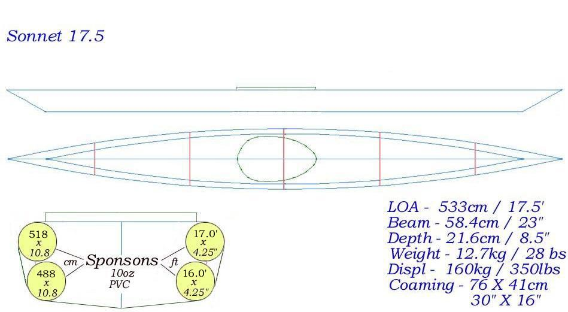

| Menu Previous Page Next Page | |
|

The Sonnet 17.5 is much higher displacement than the Sonnet 16. Unlike the 3.5" diameter Folbot sponsons used on the Sonnet 16, the Sonnet 17.5 uses homebuilt sponsons that are 4.25" diameter. Tom Love of Scotland has made a short Video Clip of his Sonnet 17.5. The following link provides instructions for making PVC sponsons. Use the (BACK) key to return.
NOTE: Since homebuilt sponsons are critical to successfully completing the Sonnet 17.5 and Sonnet Double I recommend that builders first make small "test" sponsons to perfect the technique before starting construction of these boats. Contact me if you are having difficulties. |
|